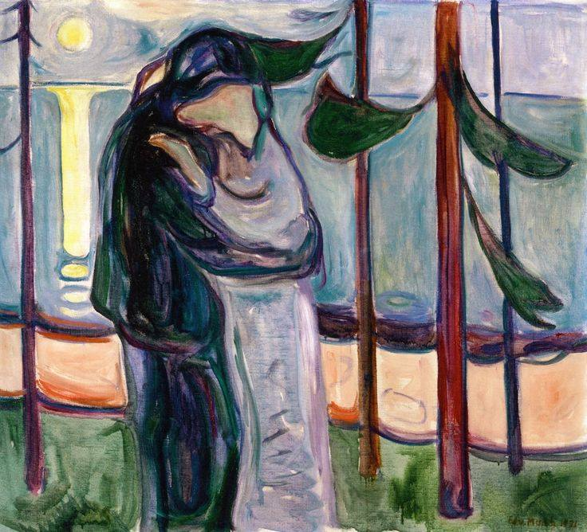

Słowa i obrazy
W lękliwym zakłopotaniu
Gdybyśmy mogli widzieć dalej, niż sięga nasza wiedza, i jeszcze wychylić się trochę poza forty naszych przeczuć, to może wówczas znosilibyśmy nasze smutki z większą ufnością niż nasze radości. Są to bowiem chwile, w których wstąpiło w nas coś nowego, coś nieznanego; nasze uczucia milkną w lękliwym zakłopotaniu, wszystko w nas się wycofuje, powstaje cisza, a w niej stoi pośrodku i milczy coś nowego, czego nikt nie zna.
— Z Listów do młodego poety, przeł. J. Nowotniak
Edvard Munch „The Kiss”, 1921